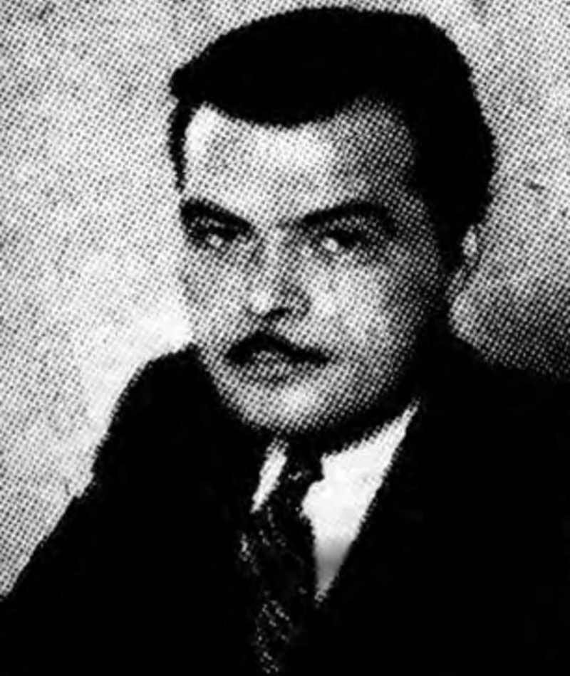
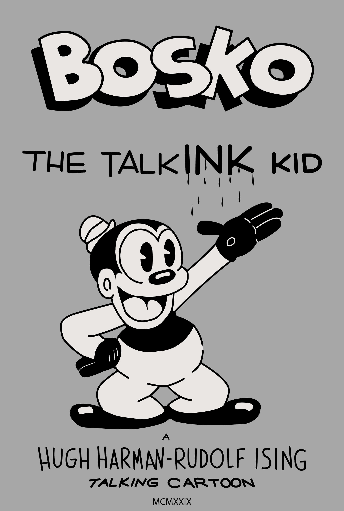
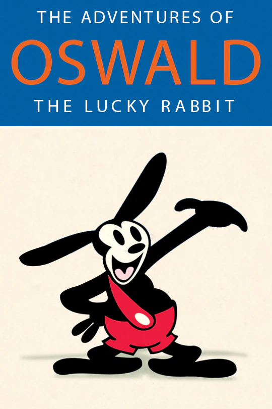

Rudolf Ising
Life of Rudolf Ising

Life of Rudolf Ising
Born on August 7, 1903, in Kansas City, Missouri
Hired by Walt Disney in the early twenties
Married Cynthia Westlake in 1941 and had a son, Rudolf Ising Jr.
Works of Rudolf Ising

Works of Rudolf Ising
Made Bosko The Talk-ink Kid for Looney Tunes, one of my favorites because of his design and was one of Ising's first designs
Made Oswald the Lucky Rabbit for Universal Pictures
Made a cartoon, Puss Gets the Boot. Better known as Tom and Jerry.
Style of Rudolf Ising

Style of Rudolf Ising
Ising has a very cartoonish and childish style
It fascinates me how random characters he made have branched off into household names like Looney Tunes and Tom and Jerry
I want to try to appeal to people with cartoons, like he does, through websites and technology